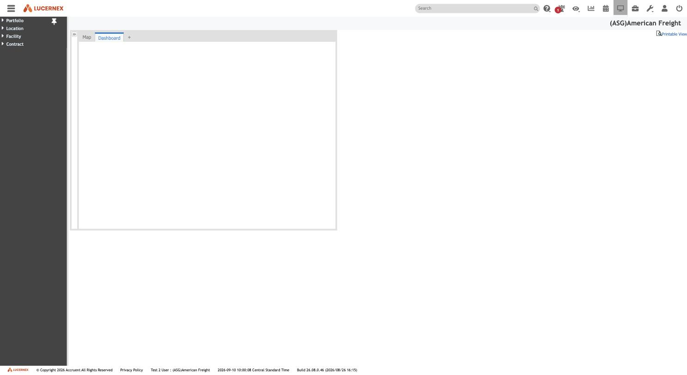
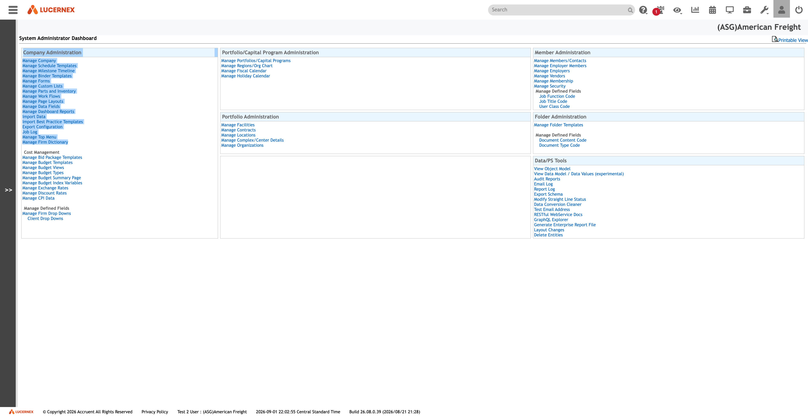
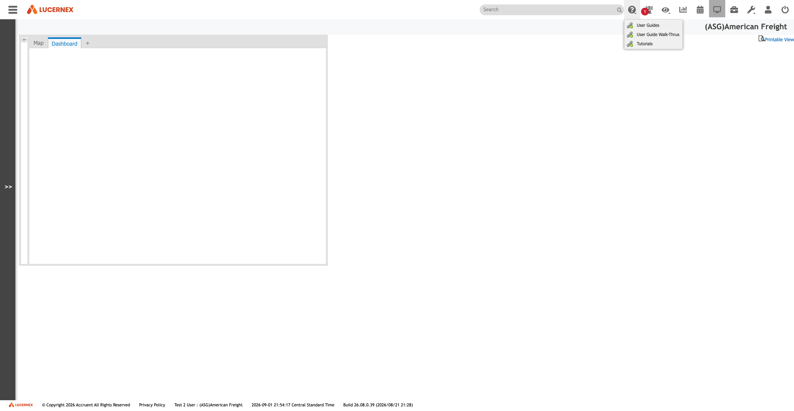

Atlas › Features › Navigation & Screens
Navigation & Screens
The front door. The navigation tree is platform-seeded and identical across tenants — 109 of 109 nodes at American Freight share their PageLayoutID with BBW's — and what a firm sees is decided by its data, not by its configuration.
Open this feature in the map →
Who it is for
DerivedEvery user. The navigation tree is the product's front door and it is platform-seeded, not tenant-authored.
Source: docs/features/README.md
Where it is used
Observed141 navigation nodes at BBW, 109 at American Freight, from one seeded tree.
Source: docs/data-model/screen-routing.md
Data decides the roots
ObservedA navigation root renders if and only if the firm holds at least one record of that ProjectEntityTypeName. Four other candidate gates were tested and eliminated: user-class page security, the action-verb list, field-level security and the firm feature flags are all open at American Freight and the Equipment Contract root still does not render. This is the single most consequential navigation fact in the corpus, because it means an empty tenant looks like a differently-configured one.
Source: docs/features/security-access/README.md
Layouts form a sequence
ObservedPreviousPageLayoutID is a sequence pointer, not a parent link. Layouts attached to one navigation node form an ordered chain, and the chains cross SEP and LIST modes. The parent link is a different column, ParentPageLayoutID.
Source: docs/features/page-layouts/README.md
135 layouts, not 93
ObservedManage Page Layouts shows 93 rows. A further 42 form layouts are reachable only through Issue Types and never appear in that list. The real population is 135, and an inventory that stops at the admin screen is short by a third.
Source: docs/features/page-layouts/README.md
Two tiers, one column
ObservedNavigation nodes and firm layouts share the PageLayoutID column and never collide: the navigation tier sits in a low, byte-identical band across tenants, the firm tier in a high tenant-specific block. A firm layout does not replace a navigation screen, it hangs off one — and several may hang off the same one.
Source: docs/features/page-layouts/README.md
Evidence
Observed8 screen captures on disk, under docs/assets/screenshots/navigation, docs/assets/screenshots/dashboard, docs/assets/screenshots/end-user — the screens themselves, not a description of them. 7 of them are cited by name in the documentation, which is what ties a capture to the screen it shows.
Source: docs/assets/screenshots/
{kind=link}

main-navigation-four-roots.jpgThe main navigation, collapsed to its four roots{kind=link}

admin-company-administration.pngSystem Administrator Dashboard{kind=link}

dashboard-home-help-menu.pngDashboard home with Help menu open asc842-rent-schedule.jpgThe ASC 842 rent schedule screen
asc842-rent-schedule.jpgThe ASC 842 rent schedule screen contract-summary-rendered.jpgA contract summary as an end user sees it
contract-summary-rendered.jpgA contract summary as an end user sees it expense-setup-with-vendor-allocations.jpgExpense Setup with its vendor allocations and an empty schedule
expense-setup-with-vendor-allocations.jpgExpense Setup with its vendor allocations and an empty schedule generate-payments-dialog.jpgThe Generate Payments dialog
generate-payments-dialog.jpgThe Generate Payments dialog payment-transactions-empty.jpg
payment-transactions-empty.jpgOpen questions (15)
Inferred15 things nobody has confirmed for this feature. Each one is work somebody has to do before the feature can be rebuilt with confidence; they are carried here rather than resolved by guessing. Click one for the question and the document that raised it.
Which dashboard layout
InferredWhich dashboard layout is intentionally assigned to Test2 User?. Nobody has confirmed this. Recorded in screens/001-dashboard-home.md, under the Screens & navigation area. Until it is settled, anything built on the assumption is a guess.
Source: docs/screens/001-dashboard-home.md
Is the empty dashboard
InferredIs the empty dashboard a permission outcome, an unconfigured personal tab, or a load issue?. Nobody has confirmed this. Recorded in screens/001-dashboard-home.md, under the Screens & navigation area. Until it is settled, anything built on the assumption is a guess.
Source: docs/screens/001-dashboard-home.md
Which top right
InferredWhich top-right toolbar icons are enabled by role versus always visible?. Nobody has confirmed this. Recorded in screens/001-dashboard-home.md, under the Screens & navigation area. Until it is settled, anything built on the assumption is a guess.
Source: docs/screens/001-dashboard-home.md
What does a Summary
InferredWhat does a Summary screen actually render? It is the first screen of every entity and has never been opened. It will be driven by one of the ASG * Summary page layouts documented in 008 — opening it would connect the layout builder to its output for the first time. Nobody has confirmed this. Recorded in screens/003-main-navigation.md, under the Screens & navigation area. Until it is settled, anything built on the assumption is a guess.
Source: docs/screens/003-main-navigation.md
What is a Binder It
InferredWhat is a Binder? It appears on all four roots and matches the Manage Binder Templates admin link, also unexplored. Nobody has confirmed this. Recorded in screens/003-main-navigation.md, under the Screens & navigation area. Until it is settled, anything built on the assumption is a guess.
Source: docs/screens/003-main-navigation.md
Is ASC 842 Test the
InferredIs ASC 842 Test the same record as Capital Lease Test with a different layout, or a genuinely separate record? The schema says ContractFinancialTest holds both — so probably one record, two layouts, but that is Inferred. Nobody has confirmed this. Recorded in screens/003-main-navigation.md, under the Screens & navigation area. Until it is settled, anything built on the assumption is a guess.
Source: docs/screens/003-main-navigation.md
What does Pro Forma
InferredWhat does Pro Forma Lease model, and does it share the Contract schema or have its own?. Nobody has confirmed this. Recorded in screens/003-main-navigation.md, under the Screens & navigation area. Until it is settled, anything built on the assumption is a guess.
Source: docs/screens/003-main-navigation.md
Scheduled Offsets and
InferredScheduled Offsets and Recoveries appear as peers under Payment Info; the schema has ScheduledOffsets, ExpenseRecovery and ExpenseOffset — which screen maps to which table?. Nobody has confirmed this. Recorded in screens/003-main-navigation.md, under the Screens & navigation area. Until it is settled, anything built on the assumption is a guess.
Source: docs/screens/003-main-navigation.md
Does the menu vary by
InferredDoes the menu vary by user class? This capture is one user (Test 2 User). A different security level may see more or fewer of the 81 screens, which would make the menu itself permission-driven data rather than fixed structure. Nobody has confirmed this. Recorded in screens/003-main-navigation.md, under the Screens & navigation area. Until it is settled, anything built on the assumption is a guess.
Source: docs/screens/003-main-navigation.md
What does Generate
InferredWhat does Generate Rent actually produce, and against which tables? It cannot be pressed on a live tenant without creating data — this needs a disposable record or an explicit go-ahead. Nobody has confirmed this. Recorded in screens/014-contract-record-end-user.md, under the Screens & navigation area. Until it is settled, anything built on the assumption is a guess.
Source: docs/screens/014-contract-record-end-user.md
What is ASG Lease Logs
InferredWhat is ASG Lease Logs, the second layout in the picker?. Nobody has confirmed this. Recorded in screens/014-contract-record-end-user.md, under the Screens & navigation area. Until it is settled, anything built on the assumption is a guess.
Source: docs/screens/014-contract-record-end-user.md
What are the Status
InferredWhat are the Status values on a schedule period row? The column is marked required but this contract has no schedule rows. Nobody has confirmed this. Recorded in screens/014-contract-record-end-user.md, under the Screens & navigation area. Until it is settled, anything built on the assumption is a guess.
Source: docs/screens/014-contract-record-end-user.md
Why does this contract
InferredWhy does this contract have no ASC 842 schedule despite being Active with dates? Either none was generated, or generation is gated on something not visible here. Nobody has confirmed this. Recorded in screens/014-contract-record-end-user.md, under the Screens & navigation area. Until it is settled, anything built on the assumption is a guess.
Source: docs/screens/014-contract-record-end-user.md
Import Data on the
InferredImport Data on the schedule screen — is a schedule importable from outside, bypassing the engine? That would be a significant finding for migration. Nobody has confirmed this. Recorded in screens/014-contract-record-end-user.md, under the Screens & navigation area. Until it is settled, anything built on the assumption is a guess.
Source: docs/screens/014-contract-record-end-user.md
What does Add RE
InferredWhat does Add RE Contract create, and how does it relate to MasterContractID?. Nobody has confirmed this. Recorded in screens/014-contract-record-end-user.md, under the Screens & navigation area. Until it is settled, anything built on the assumption is a guess.
Source: docs/screens/014-contract-record-end-user.md